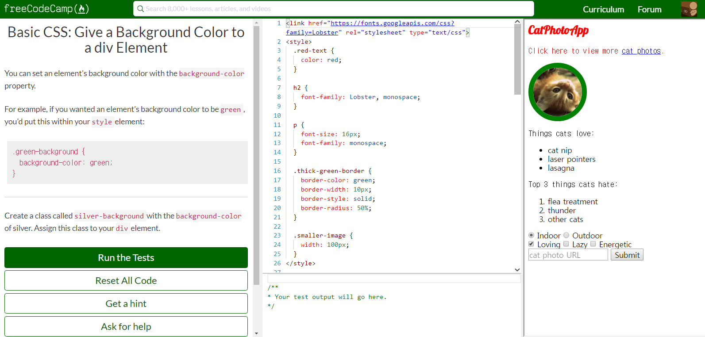

내가 개발자로 전향을 할지는 모르겠지만, 우선 영어로 배워두면 좀 더 경쟁력 있는 개발자가 될 것 같다는 생각을 했다. 검색을 통해 꽤나 많은 사람들이 FreeCodeCamp라는 사이트의 Certification 수료 후에 실제로 직업을 구했다는 후기들이 있었다.
FreeCodeCamp의 좋은 점은 영어라는 점 외에도, 따로 소프트 웨어를 깔지 않아도 여러가지 과제들을 해결해가면서 배울 수 있다는 것. 그리고 동영상이 아니라 텍스트로 공부하기 때문에 고정 시간이 들지 않는 다는 점들이었다. (빨리 이해하면 빨리 넘어갈 수 있었고 모르는 부분은 반복해서 읽었다.)
Certification 종류는 아래와 같다.
아래 그림은 Responsive Web Design Certification (300 hours) 과정 중의 한 부분이다.
